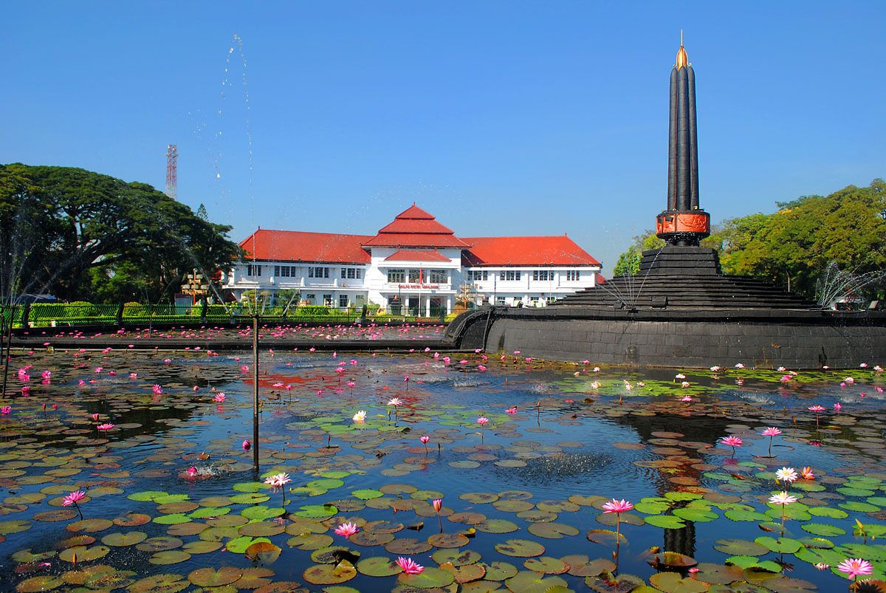
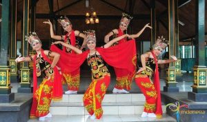
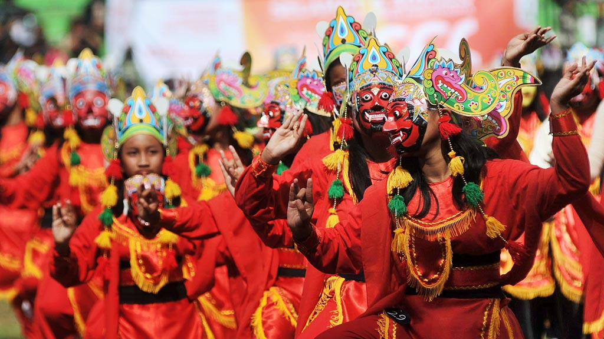
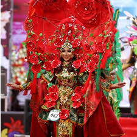
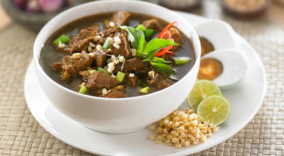
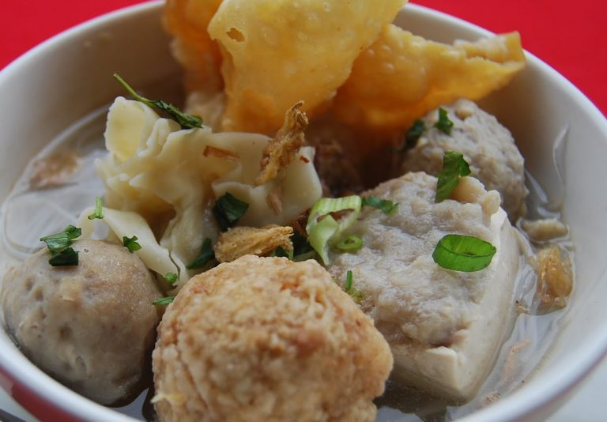
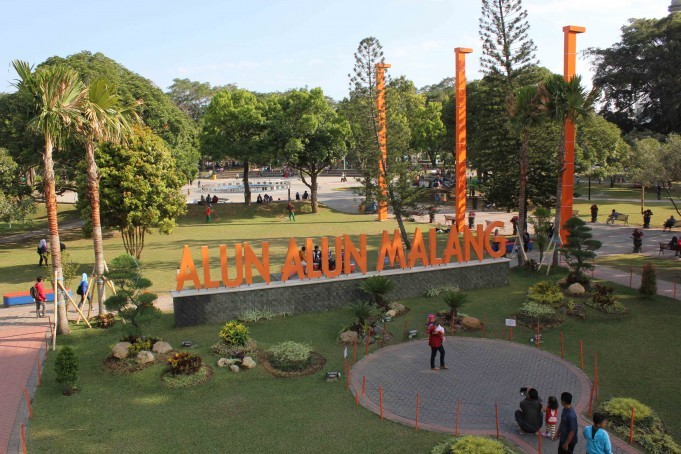
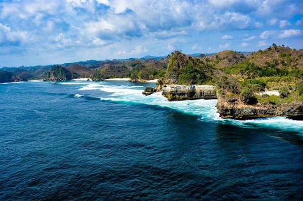
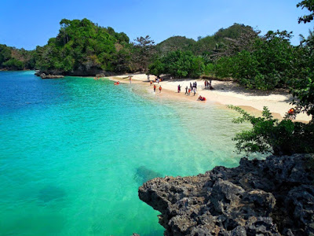
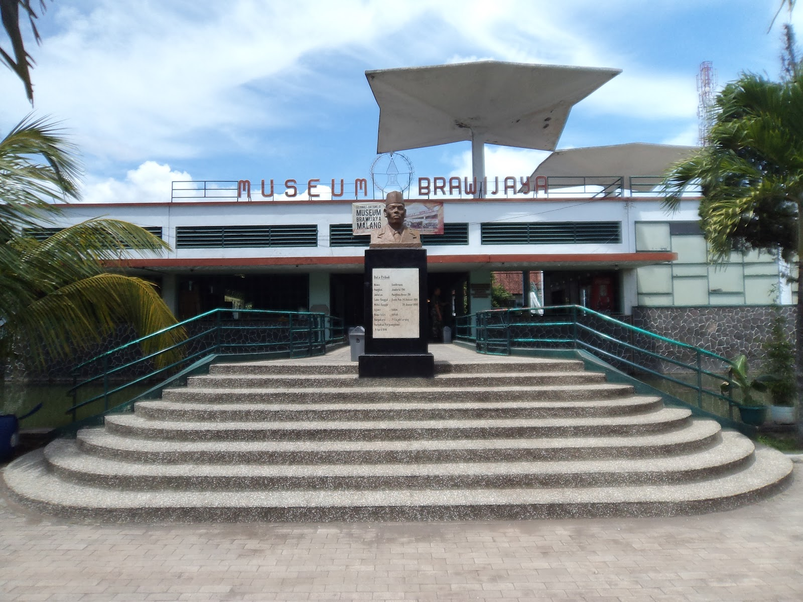

Sedikit Cerita tentang Kota Malang
Kota Malang, adalah sebuah kota di Provinsi Jawa Timur, Indonesia. Kota
ini berada di dataran tinggi yang cukup sejuk,
terletak 90 km sebelah selatan Kota Surabaya, dan wilayahnya
dikelilingi oleh Kabupaten Malang. Malang merupakan kota
terbesar kedua di Jawa Timur, dan dikenal dengan julukan kota pelajar
Budaya Khas Kota Malang

Tari Beskalan
Jenis tarian ucapan “Selamat Datang”, tarian khas Kota Malang yang dipakai dalam
upacara penyambutan tamu yang datang berkunjung ke Kota Malang Beskalan sendiri berasal dari kata “bakalan” yang artinya pertama atau dasar dari segala bentuk penghargaan terhadap
tamu atau orang asing yang muncul secara spontan.

Tari Topeng
Tari Topeng Malangan ini adalah hasil dari perpaduan
antara budaya Jawa Tengahan, Jawa Kulonan dan Jawa
Timuran (Blambangan dan Osing), sehingga gerakan dari Tari Topeng
Malangan ini mengandung unsur kekayaan dinamis
dan musik dari etnik Jawa, Madura dan Bali.

Karnaval Bunga
Karnaval Bunga merupakan event yang menarik banyak perhatian para wiastawan.
Berbagai model dan penampilan dengan tema bunga dihadirkan disini. Event
Karnaval Bunga biasanya diadakan di sepanjang jalan Ijen Kota Malang dengan
rute kisaran 2-3km.
Makanan Khas Kota Malang

Bakso Bakar
Bakso Bakar ini juga merupakan salah satu makanan khas malang yang selalu diburu oleh para wisatawan. Bakso Bakar ini sama seperti pada bakso yang sering kamu makan sebelumnya, yang membedakan hanyalah bakso ini dilumuri dengan saus, kecap dan bumbu-bumbuan yang membuat rasanya semakin lezat.

Rawon
Rawon ini tentunya bisa kita temui dimana saja, terutama di Jakarta. Sup daging sapi yang disajikan dengan kuah berwarna hitam dan telur asin ini memiliki cita rasa yang sangat unik dan lezat.

Orem-Orem
Orem-orem, makanan yang disajikan dengan ketupat, tempe yang dipotong kecil-kecil dan telur asin diatasnya ini memiliki rasa yang lezat sekali.

Bakso Malang
Hampir di setiap sudut Jakarta kamu bisa menemukan Bakso Malang. Tapi jangan salah lho! Kalau kamu mencicipi bakso ini langsung berada di Malang, tentunya sensasi dan rasanya akan sangat berbeda dengan yang pernah kamu cicipi sebelumnya.
Tempat Wisata di Kota Malang

Alun-Alun
Alun-alun ini sekarang sudah dibenahi sehingga Anda bisa dengan nyaman menikmati kesibukan kota Malang, sambil ditemani ratusan burung merpati serta taman cantik yang tertata rapi.

Pantai Batu Bengkung
Pantai Batu Bengkung adalah pantai yang terletak di Malang selatan. Pantai ini memiliki tebing karang yang indah sebagai sajian utamanya. Karena merupakan bagian dari pantai selatan, otomatis Pantai Batu Bengkung ini memiliki ombak yang besar. Jadi, jika ingin berenang sebaiknya berhati-hati.

Pantai 3 Warna
Pantai yang satu ini dinamakan Tiga Warna bukan tanpa alasan, tetapi karena memang pantai ini memiliki warna air laut yang berbeda dan warnanya tersebut tampak ada tiga, dimana ini diakibatkan oleh tingkat kedalaman air laut itu sendiri.

Museum Brawijaya
Di museum ini Anda akan menemukan banyak sekali benda kuno yang jelas bersejarah, seperti gerbong maut, senapan, meriam, tank dan lain-lain. Tentunya ini juga menjadi tempat yang tepat untuk mengenalkan sedikit sejarah pada anak.